2015年北京市中考语文试题 · 基础选择题 第1、2、3、4、5、6、8题
1．欣赏下面这幅书法作品，完成第（1）﹣（2）题。
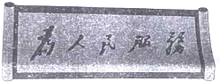
（1）对这幅书法作品的欣赏，不恰当的一项是
A．线条奔放，笔力雄健。 | B．五字错落有致，收放有度。 |
C．气韵贯通，展现书者胸襟。 | D．采用隶书书体，方正典雅。 |
2．阅读下面的文字，完成第（1）﹣（2）题。
中国抗日战争从1931年开始到1945年结束，经历了14年艰难曲折的历程，是中国近代以来抗击外敌入侵第一次取得完全胜利的民族解放战争，是中国人民用鲜血和生命铸就的反侵略战争的历史丰碑。在世界反法西斯战争中，中国抗日战争____，是世界反法西斯战争的重要组成部分。中国抗日战争不仅关乎中华民族的前途和命运，而且关系到人类社会的前途和命运，值得铭记，并永载史册。
（1）对文中加点字的注音和对画线字笔顺的判断，全部正确的一项是
A．曲折（qū）“华”字的笔顺是：
B．曲折（qǔ）“华”字的笔顺是：
C．曲折（qū）“华”字的笔顺是：
D．曲折（qǔ）“华”字的笔顺是：
（2）根据语意将下面语句依次填入文中横线处，最恰当的一项是
①持续时间最长 | ②付出代价最大 | ③开始时间最早 | ④抗击日军最多 |
A．③④①② | B．①③④② | C．③①④② | D．①④②③ |
3．许多名胜古迹都有名人题写的匾额，这些匾额上的字具有较高的书法艺术价值，但有的字却不符合现代规范汉字的书写要求。下列匾额属于这种情况的一项是（ ）
A．
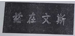
北京孔庙B．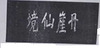
山东蓬莱阁C．
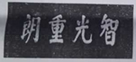
北京卧佛寺D．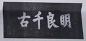
四川成都武侯祠4．恰当地嵌入书名、地名、人名是写对联的技巧之一。孙伏园悼念鲁迅先生的挽联，就巧妙地嵌入了鲁迅先生的作品名称和主编的刊物名称，意中有意，感人至深。在下面对联的横线处，依次填写作品名称或刊物名称，与原联相符的一项是（ ）
踏_______，刈野草，热风奔流，一生_______；
痛_______，叹而已，十月噩耗，万众_______。
提示：《呐喊》《彷徨》《野草》《而已集》《热风》《十月》《毁灭》是鲁迅先生的作品（含译作）
《莽原》《奔流》是鲁迅先生主编的刊物。
A．毁灭 彷徨 莽原 呐喊B．莽原 呐喊 毁灭 彷徨
C．莽原 彷徨 毁灭 呐喊D．毁灭 呐喊 莽原 彷徨
5．“三十六计”是指中国古代36个兵法策略，是中华民族优秀文化遗产之一。“三十六计”中的许多计谋是借助比喻定名的。下列计谋的定名都借助了比喻的一项是（ ）
A．远交近攻、顺手牵羊、反客为主
B．围魏救赵、以逸待劳、偷梁换柱
C．打草惊蛇、浑水摸鱼、调虎离山
D．暗度陈仓、金蝉脱壳、欲擒故纵
6．下面两个语段都出自法国总价都德的小说《最后一课》．语段（一）中的画线语句，是从说“布告牌传出坏消息”转换到说“‘我’上学的情形”；语段（二）中的画线语句，是用“最明白，最精确”解释“最美的语言”。根据各自语境，在【甲】【乙】处分别填写标点符号，正确的一项是（ ）
语段（一）我走过镇公所的时候，看见许多人站在布告牌前边。最近两年来，我们的一切坏消息都是从那里传出来的：败仗啦，征发啦，司令部的各种命令啦【甲】我也不停步，只在心里思量：“又出了什么事啦？”
语段（二）韩麦尔先生从这一件事谈到那一件事，谈到法国语言上来了。他说，法国语言是世界上最美的语言【乙】最明白，最精确；又说，我们必须把它记在心里，永远别忘了它，亡了国当了奴隶的人民，只要牢牢记住他们的语言，就好像拿着一把打开监狱大门的钥匙。
A．【甲】破折号【乙】破折号B．【甲】逗号【乙】句号
C．【甲】破折号【乙】句号D．【甲】逗号【乙】破折号
8．（4分）阅读下面的连环画，完成（1）﹣（2）题。
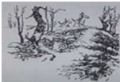 | 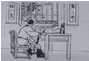 | 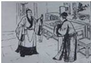 |
1 赵构登基后，整顿军备。名将宗泽举荐了岳飞，县令徐仁奉旨前往征召。 | 2 这年岳飞23岁，听说汴京陷落，不禁为多难的国家感到担忧。 | 3 杨幺派人携重金逛岳飞入伙。岳飞表示外敌当前，不愿落草，只等投军抗金。 |
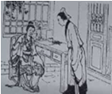 | 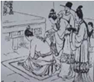 | 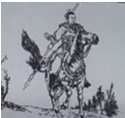 |
4 岳飞送走杨幺手下，禀告母亲，岳母点头道：“我儿拒绝得对。”这时，徐仁带着圣旨到来。 | 5 岳母吩咐岳飞祭拜天地祖宗，并在他背上刺了“尽忠保国”四字，说：“愿你做个忠臣，流芳百世。” | 6 次日 。 |
（1）结合岳母刺字时所说的话，下列对“精忠报国”中“精忠”二字的解释，最恰当的一项是
A．极其忠诚B．精诚尽力C．精心付出D．忠肝义胆